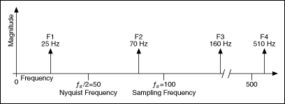
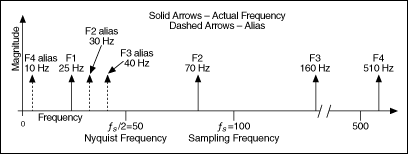

An aliased signal provides a poor representation of the analog signal. Aliasing causes a false lower frequency component to appear in the sampled data of a signal. The following figure shows an adequately sampled signal and an inadequately sampled signal.

In the previous figure, the inadequately sampled signal appears to have a lower frequency than the actual signal—two cycles instead of ten cycles.
Increasing the sampling frequency increases the number of data points acquired in a given time period. Often, a fast sampling frequency provides a better representation of the original signal than a slower sampling frequency.
For a given sampling frequency, the maximum frequency you can accurately represent without aliasing is the Nyquist frequency. The Nyquist frequency equals one-half the sampling frequency, as shown by the following equation.
where fN is the Nyquist frequency and fs is the sampling frequency.
Signals with frequency components above the Nyquist frequency appear aliased between DC and the Nyquist frequency. In an aliased signal, frequency components actually above the Nyquist frequency appear as frequency components below the Nyquist frequency. For example, a component at frequency fN < f0 < fs appears as the frequency fs - f0.
The following two figures show the aliasing phenomenon. The first figure shows the frequencies contained in an input signal acquired at a sampling frequency, fs, of 100 Hz.

The following figure shows the frequency components and the aliases for the input signal from the previous figure

In the previous figure, frequencies below the Nyquist frequency of fs/2 = 50 Hz are sampled correctly. For example, F1 appears at the correct frequency. Frequencies above the Nyquist frequency appear as aliases. For example, aliases for F2, F3, and F4 appear at 30 Hz, 40 Hz, and 10 Hz, respectively.
The alias frequency equals the absolute value of the difference between the closest integer multiple of the sampling frequency and the input frequency, as shown in the following equation:
AF = |CIMSF - IF|
where AF is the alias frequency, CIMSF is the closest integer multiple of the sampling frequency, and IF is the input frequency. For example, you can compute the alias frequencies for F2, F3, and F4 from the previous figure with the following equations:
Alias F2 = |100 - 70| = 30 Hz
Alias F3 = |(2)100 - 160| = 40 Hz
Alias F4 = |(5)100 - 510| = 10 Hz